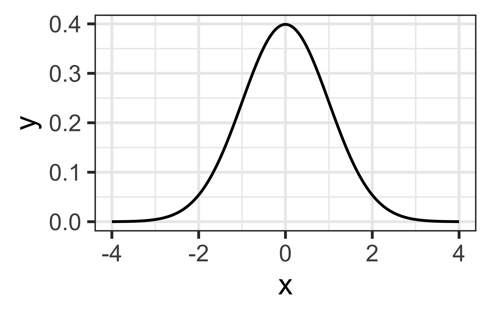
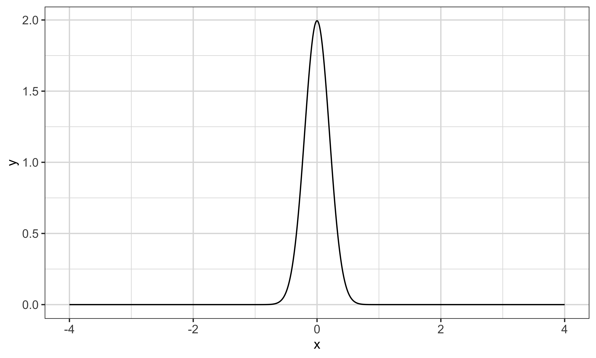
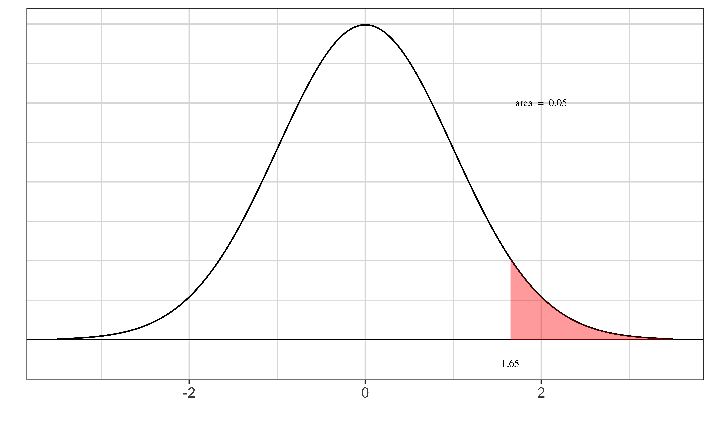
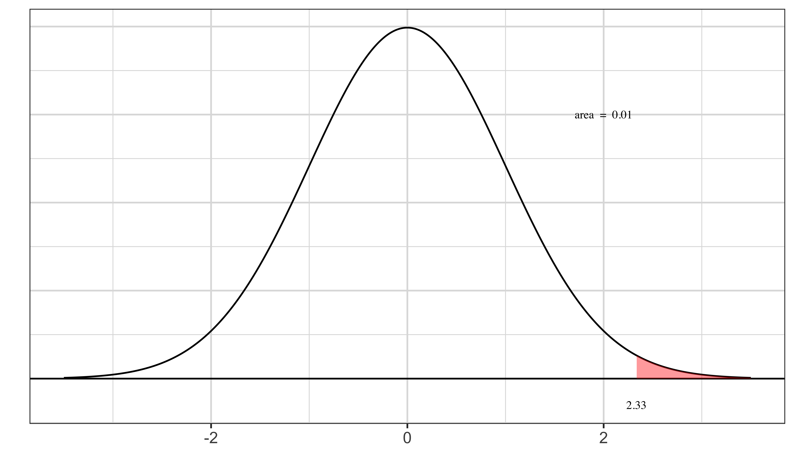
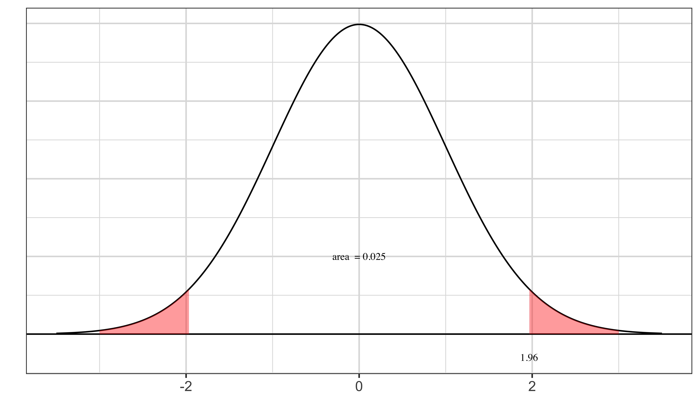
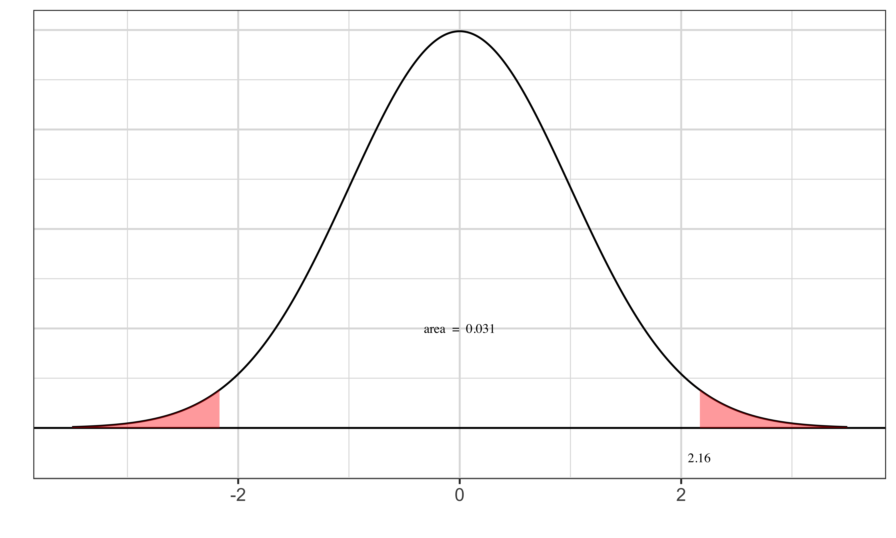
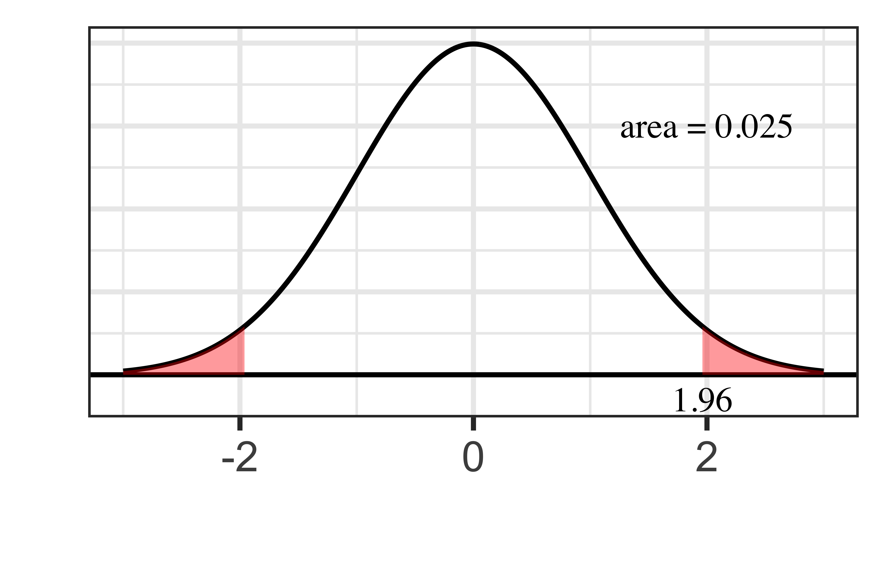
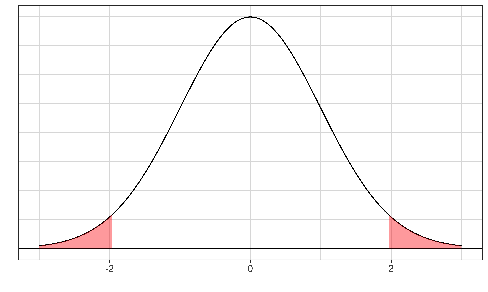
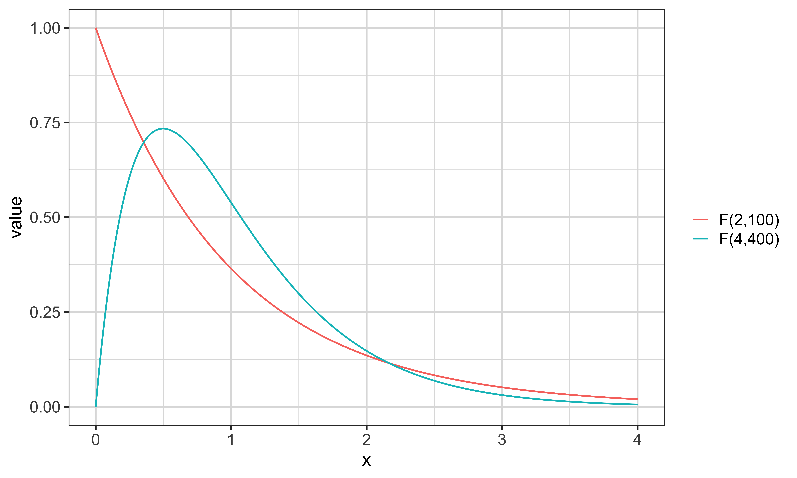

05: Hypothesis Testing
Review on Statistical Hypothesis Testing
Hypothesis Testing
Lecturer transcript
Five steps, and every test in this lecture is one of them wearing different clothes, so it is worth reading them now and coming back at the end. Notice how much work step two is doing. You need the distribution of your test statistic assuming the null is true, and if you cannot get that, you have no test. Steps four and five are where judgement enters: you choose how much error you will tolerate, and then check how unlikely your number was. Everything else is mechanical. Read the red phrases twice, because “if the null is true” is the assumption the whole logic hangs on.
Here is the general step of any hypothesis testing:
Step 1: specify the null (H_0) and alternative (H_1) hypotheses
Step 2: find the distribution of the test statistic if the null hypothesis is true
Step 3: calculate the test statistic based on the data and regression results
Step 4: define the significance level
Step 5: check how unlikely that you get the actual test statistic (found at Step 3) if indeed the null hypothesis is true
Lecturer transcript
A deliberately artificial example, and the artificiality is the point. We want to test whether the expected value of x is one. Read the state of knowledge: we somehow already know the variance is four. That never happens in practice, and we assume it here only so the first pass through the logic has nothing hidden in it. Your estimator is the sample mean, which you already know is unbiased from lecture 03. So we have an estimator and a target value, and the question is how to decide whether the two are far enough apart to matter.
Goal
Suppose you want to test if the expected value of a normally distributed random variable (x) is 1 or not.
State of Knowledge
We do know x follows a normal distribution and its variance is 4 for some reason.
Your Estimator
Your estimator is the sample mean: \theta = \sum_{i=1}^J x_i/J
Lecturer transcript
Two math asides and then the payoff, so follow the chain. The first says scaling a random variable scales its variance by the square of the factor. The second says shifting a Normal moves its mean but leaves its variance alone. Put them together and any Normal can be turned into a standard Normal: subtract the mean, divide by the standard deviation. Now apply that to the sample mean. Its variance is four over J, so its standard deviation is two over root J. Dividing by that gives root J over two, times theta minus alpha. That is the last line.
Math Aside 1
Var(ax) = a^2 Var(X)
So, we know that \theta \sim N(\alpha, 4/J) (of course \alpha is not known).
Math Aside 2
If x \sim N(a, b), then, x-a \sim N(0, b) (shift)
So, \frac{x-a}{\sqrt{b}} \sim N(0, 1) (combined with Math Aside 1)
This means,
Since \theta = \sum_{i=1}^J x_i/J and x_i \sim N(\alpha, 4),
- Var(\theta) = J \times \frac{1}{J^2}Var(x) = 4/J
- \frac{\sqrt{J}}{2} \cdot (\theta - \alpha)\sim N(0, 1).
Lecturer transcript
Here is where the null hypothesis actually enters. Up to now alpha was unknown, so the expression on the left was not something you could compute. But if the null says alpha equals one, substitute it in, and suddenly every symbol is a number you have. Read the sentence carefully and notice the red phrase: you subtract the value under the null first, then multiply by root J, then divide by two. Students routinely drop the subtraction. The picture on the right is what that quantity follows if the null is true. It is just the standard Normal.
We established that \frac{\sqrt{J}}{2} \cdot (\theta - \alpha)\sim N(0, 1).
The null hypothesis is \alpha = 1.
If \alpha = 1 is indeed true, then \sqrt{J} \times (\theta - 1)/2 \sim N(0, 1).
In other words, if you take the sample mean, subtract the value under the null, multiply by the square root of the number of observations, and divide by 2, the result follows the standard Normal distribution like below.
Lecturer transcript
Now put numbers in. A hundred observations, sample mean of two, null value of one. Root of a hundred is ten, times the gap of one, divided by two, gives five. Now look at the figure and find five on the horizontal axis. It is not there; the curve has effectively no mass out that far. So either the null is true and something absurdly unlikely happened, or the null is false. That is the entire logic of hypothesis testing, and you have just done one. What we have not yet done is say how unlikely counts as unlikely enough.
Suppose you have obtained 100 samples (J = 100) and calculated \theta (sample mean), which turned out to be 2.
Then, your test statistic is \sqrt{100} \times (2-1)/2 = 5.
How unlikely is it to get the number you got (5) if the null hypothesis is indeed true?

Lecturer transcript
The same calculation with different numbers, and a different verdict. Four hundred observations, sample mean of one point zero two, so the gap from the null is tiny. Root of four hundred is twenty, times zero point zero two, divided by two, gives zero point two. Find that on the figure: it is right in the fat middle of the distribution. Getting zero point two is entirely ordinary if the null is true, so you have no grounds to doubt it. Note that the sample was four times larger here and still gave no evidence, because the gap was small.
Suppose you have obtained 400 samples (J = 400) and calculated \theta (sample mean), which turned out to be 1.02.
Then, your test statistic is \sqrt{400} \times (1.02-1)/2 = 0.2.
How unlikely is it to get the number you got (0.2) if the null hypothesis is indeed true?

Lecturer transcript
A worthwhile aside about why we bother normalising at all. You do not have to. You could just use theta minus alpha as your statistic, and the figure on the right shows what its distribution looks like with a hundred observations: a Normal centred at zero but much narrower, standard deviation zero point two. Reconsider case one with that statistic and you get one, which on this narrow curve is five standard deviations out, the same conclusion as before. The reason we normalise is at the bottom: it lets you look up one table forever instead of a new distribution for every sample size.
Note that you do not really need to use \sqrt{J} \times (\theta - \alpha)/2 as your test statistic.
You could alternatively use \theta - \alpha. But, in that case, you need to be looking at N(0, 4/J) instead of N(0, 1) to see how unlikely you get the number you got.
For example, when the number of observations is 100 (J = 100), the distribution of \theta-\alpha looks like the figure on the right.

Reconsider the case 1
Suppose you have obtained 100 samples (J = 100) and calculated \theta (sample mean), which turned out to be 2.
Then, your test statistic is 2-1 = 1.
Is it unlikely for you to get 1 if the null hypothesis is true?
The conclusion would be exactly the same as using \sqrt{J} \times (\theta - \alpha)/2 because the distribution under the null is adjusted according to the test statistic you use.
Note
We always use a normalized test statistic so that we can always look up the same distribution.
Lecturer transcript
Two questions and their answers, and this is the slide to come back to when the later tests start blurring together. What you need: a statistic whose distribution you know under the null. What you do: transform your raw quantity, usually a coefficient or a sample mean, so that its distribution is one you can look up. Then check whether the number you got is a plausible draw from it. Note the parenthesis at the end, which is honest about what we have not done: we have no formal criterion yet for how unlikely is unlikely enough. That is the significance level.
What do we need?
- test-statistic of which we know the distribution (e.g., t-distribution, Normal distribution) assuming the null hypothesis
What do we (often) do?
- transform (most of the time) a raw random variable (e.g., sample mean in the example above) into a test statistic of which we know the distribution assuming that the null hypothesis is true
- e.g., we transformed the sample mean so that it follows the standard Normal distribution.
- check if the actual number you got from the test statistic is likely to happen or not (formal criteria has not been discussed yet)
Lecturer transcript
Your turn, and the structure mirrors the worked example exactly, so you should be able to do all four parts. Read the setup: the difference in salaries between two universities, distributed Normal with unknown mean alpha and variance sixteen. You want to test whether alpha is ten. Work through the four questions on paper before opening the answer. Part two is the one to be careful with, because the variance of the sample mean is not sixteen; it is sixteen over four hundred. Then read the note underneath, which flags the two things this artificial setup let us skip.
You have collected data on annual salary for those who graduated from University A and B. You are interested in testing whether the difference in annual salary between the universities (call it x) is 10 on average. You know (for unknown reasons) that the difference is distributed as N(\alpha, 16).
- What is the null hypothesis?
- Under the null hypothesis, what is the distribution of the sample mean when the number of observation is 400?
- Normalize the test statistic so that the transformed version follows N(0, 1).
- The actual difference you observed is 10.2. What is the probability that you observe a number greater than 10.2 if the null hypothesis is true? Use
pnorm().
Note
In reality,
- we need to find out what the distribution of the test statistic is
- we need to formally define when we reject or fail to reject the null hypothesis
Lecturer transcript
Check yours against this. The null is alpha equals ten, and under it the sample mean has variance sixteen over four hundred, so standard deviation zero point two. Dividing by that means multiplying by root of four hundred over four, which is five. Your observed difference is ten point two, so the statistic is five times zero point two, which is one. Run the cell: one minus pnorm of one is about sixteen percent. So a gap this size happens roughly one time in six when the null is true, which is not remotely unusual.
- \alpha = 10
- \theta \sim N(\alpha, 16/400)
- \sqrt{\frac{400}{16}}\cdot (\theta - \alpha)
- The test statistic is 5 \times (10.2 - 10) = 1
Hypothesis Testing on the Coefficients
Hypothesis Testing of the Coefficients
Lecturer transcript
Now the same logic pointed at regression coefficients, which is what you actually care about. Two example hypotheses in the box: education has no effect, experience has a positive effect. Note they have different shapes, one an equality and one an inequality, and that distinction becomes one-sided versus two-sided testing shortly. Then read the three bullets, because the second is the crux. If beta-one-hat were a fixed number you would just look at it. But it is one realisation of a random variable, so even when the true beta is exactly zero you can draw an estimate far from zero.
Consider the following model,
wage = \beta_0 + \beta_1 educ + \beta_2 exper + u
Example Hypotheses
- education has no impact on wage (\beta_1=0)
- experience has a positive impact on wage (\beta_2>0)
If \widehat{\beta}_1 is non-random, but just a scalar, all you have to do is just check if \widehat{\beta}_1=0 or not
But, the estimate you get is just one realization of the range of values \widehat{\beta}_1 could take because it is a random variable
This means that even if \beta_1=0 in the population, it is possible to get an estimate that is very far from 0
Lecturer transcript
A stocktake before we can go further. We have unbiasedness from MLR one through four, and a variance formula from MLR five. But read the line in blue: we have never said anything about the shape of the error distribution. Unbiasedness and variance are statements about the first two moments only. To do a test you need the whole distribution of your statistic, not two summary numbers, so we need more. The parenthesis at the end is a promise worth remembering: this assumption turns out to be avoidable in large samples, which is the asymptotics lecture.
So far, we learned that:
- OLS estimators are unbiased under MLR.1 ~ MLR.4
- Variance of the OLS estimator of \beta_j is \frac{\sigma^2}{SST_x\cdot (1-R^2_j)} under MLR.1 ~ MLR.5
We have NOT made any assumptions about the distribution of the error term!!
In order to perform hypothesis testing, we need to make assumptions about the distribution of error term (this is not strictly true, but more on this later)
Lecturer transcript
This is MLR six, and read it carefully because it is much stronger than it looks. The headline is that u is Normally distributed. But look at the other red word: independent. Independence of the error from the regressors is far more than zero correlation. Read the second callout, which spells out the consequences. Independence gives you a zero conditional mean, so MLR four comes free. It also gives you constant conditional variance, so MLR five comes free too. We are assuming a great deal here, which is why the asymptotics lecture is such a relief.
For the purpose of hypothesis testing, we will make the following assumption:
Normality of the error term
The population error u is independent of the explanatory variables x_1,\dots,x_k and is normally distributed with zero mean and variance \sigma^2:
u\sim N(0,\sigma^2)
Note
The normality assumption is much more than error term being distributed as Normal.
Independence of the error term implies
- E[u|x] = 0
- Var[u|x]= \sigma^2
So, we are necessarily assuming MLR.4 and MLR.5 hold by the independence assumption.
Lecturer transcript
Two consequences, one per column. On the left, y conditional on x is Normal, with the regression line as its mean. That follows immediately: y is a constant plus a Normal error. On the right is the one we need. Because beta-j-hat is a weighted sum of the y values, and sums of Normals are Normal, the estimator is itself Normally distributed, centred on the true beta. Subtract the mean and divide by the standard deviation, and you have a standard Normal. Now read the question at the bottom, because the answer is no, and the next tab says why.
distribution of the dependent variable
The distribution of y conditional on x is a Normal distribution
y|x \sim N(\beta_0+\beta_1 x_1+\dots+\beta_k x_k,\sigma^2)
- E[y|x] is \beta_0+\beta_1 x_1+\dots+\beta_k x_k
- u|x is N(0,\sigma^2)
distribution of the OLS estimator
If the MLR.1 through MLR.6 are satisfied, OLS estimators are also Normally distributed!
\widehat{\beta}_j \sim N(\beta_j,Var(\widehat{\beta}_j))
which means,
\frac{\widehat{\beta}_j-\beta_j}{se(\widehat{\beta}_j)} \sim N(0,1)
Question
Okay, so are we going to use this for testing involving \beta_j?
Lecturer transcript
And here is the catch the question was pointing at. The expression on the previous tab used the true standard error, which contains sigma squared, which you do not know. Replace it with the estimated standard error and the distribution is no longer Normal. It becomes t with n minus k minus one degrees of freedom. The extra spread in the t distribution is the cost of estimating the denominator: you have two random things in the ratio now instead of one. Note the corrected formula in the parenthesis, and the square root in particular, because the standard error is the root of the variance.
In practice, we need to estimate se(\beta_j). If we use \widehat{se(\widehat{\beta}_j)} instead of se(\widehat{\beta}_j), then,
\frac{\widehat{\beta}_j-\beta_j}{\widehat{se(\widehat{\beta}_j)}} \sim t_{n-k-1}
where n-k-1 is the degree of freedom of residual.
(Note: \widehat{se(\widehat{\beta}_j)} = \sqrt{\widehat{\sigma}^2/\big[SST_X\cdot (1-R_j^2)\big]} — the standard error is the square root of the estimated variance)
Lecturer transcript
This is a reference tab rather than something to work through, and I would bookmark it. The distinction that matters most is the hat. Sigma squared is the true error variance; sigma-hat squared is what you compute from the residuals. Var of beta-j-hat is a true quantity; the version with a hat over the whole thing is your estimate of it. And se is the square root of a variance, never the variance itself. Almost every algebra mistake in this lecture comes from losing track of which of these you are holding.
- k: the number of explanatory variables included except the intercept
- \sigma^2: the true variance of the error term
- \widehat{\sigma^2}: the estimator (estimate) of the variance of the error term
- \widehat{\sigma^2} = \frac{\sum \widehat{u}_i^2}{n-k-1}
- SST_X = \sum (x_i - \bar{x})^2
- \widehat{\beta}_j: OLS estimator (estimate) on explanatory variable x_j
- \widehat{\beta} = \frac{\sum (x_i - \bar{x})(y_i - \bar{y})}{SST_X} (for simple univariate regression)
- var(\widehat{\beta}_j): the true variance of \widehat{\beta}_j
- R^2_j: R^2 when you regress x_j on all the other covariates (mathematical expression omitted)
- \widehat{var(\widehat{\beta}_j)}: Estimator (estimate) of var(\widehat{\beta}_j)
- \widehat{var(\widehat{\beta}_j)} = \frac{\widehat{\sigma^2}}{SST_X\cdot(1-R^2_j)}
- se(\widehat{\beta}_j): square root of var(\widehat{\beta}_j)
- \widehat{se(\widehat{\beta}_j)}: square root of \widehat{var(\widehat{\beta}_j)}
Details of hypothesis testing on \beta_j
Lecturer transcript
The courtroom analogy, and it repays taking seriously. You are the attorney. The null hypothesis is what you want to knock down: the defendant is not guilty. The alternative is what you are arguing for. Notice the asymmetry this builds in. You do not prove the null true; you either reject it or fail to reject it, exactly as a court either convicts or fails to convict. And the burden of proof sits on the alternative. That is why we will say “fail to reject” rather than “accept”, and why an insignificant result is not evidence of no effect.
Statistical hypothesis testing involves two hypotheses: Null and Alternative hypotheses.
Pretend that you are an attorney who indicted a defendant who you think committed a crime.
Null Hypothesis
Hypothesis that you would like to reject (defendant is not guilty)
Alternative Hypothesis
Hypothesis you are in support of (defendant is guilty)
Lecturer transcript
Two shapes of alternative, and which you use changes where you look. With a one-sided alternative you have a directional claim, so you only care about one tail of the distribution. With a two-sided alternative you care about departures in either direction, so you look at both tails. The practical consequence is that for a given significance level the two-sided critical value is further out, because you have to split your error budget across two tails. Then read the callout: these critical values are just quantiles, the same computation as qnorm in lecture 03.
one-sided alternative
H_0: \beta_j = 0 H_1: \beta_j > 0
You look at the positive end of the t-distribution to see if the t-statistic you obtained is more extreme than the level of error you accept (significance level).
two-sided alternative
H_0: \beta_j = 0 H_1: \beta_j \ne 0
You look at both ends of the t-distribution to see if the t-statistic you obtained is more extreme than the level of error you accept (significance level).
This is where lecture 03 pays off
The numbers we are about to use as critical values are just quantiles, computed exactly the way we computed qnorm(0.95) = 1.64 in the Monte Carlo lecture. The only change is which distribution you ask: qt() instead of qnorm(), because we had to estimate \sigma rather than know it.
Lecturer transcript
The significance level, and then the thing this slide previously left out. The definition is the probability of rejecting a true null: how often you convict an innocent defendant. Now read the table. There are two ways to be wrong, and lowering your significance level trades one for the other. Push from five percent to one percent and you convict fewer innocents, but you also acquit more of the guilty, which is Type two error. One minus that is the power of your test. The last bullet is the practical payoff: not significant does not mean no effect.
Definition
The probability of rejecting the null when the null is actually true (the probability that you wrongly claim that the null hypothesis is wrong even though it is true in reality: Type I error)
A lower significance level requires stronger evidence before rejecting the null and reduces the long-run probability of a Type I error. It does not tell us the probability that the null hypothesis is true.
But lowering it is not free
There are two ways to be wrong, and they trade off against each other:
| H_0 is true | H_0 is false | |
|---|---|---|
| You reject H_0 | Type I error (probability = significance level) | correct |
| You do not reject H_0 | correct | Type II error |
- the significance level is a choice about how much Type I error you will tolerate
- pushing it down from 5% to 1% moves the critical value further out, so you reject less often — which means more Type II error: real effects you fail to detect
- 1 - P(\text{Type II error}) is called the power of the test: the chance of detecting an effect that is genuinely there
- this is why “not statistically significant” does not mean “no effect”. It may just mean your test had too little power to see it
Lecturer transcript
Here it is as a picture. The curve is the distribution of the t-statistic assuming the null is true. The red region is the five percent of the area furthest out in the positive tail, and the number at its edge is the critical value. If the null is true, you land in the red only five percent of the time, so a statistic in the red is either bad luck at exactly that rate or evidence against the null. That is the whole decision rule. Read the two definitions underneath and keep them apart: five percent is the level, the number is the critical value.
Figure on the right presents the distribution of \frac{\widehat{\beta}_j-\beta_j}{\widehat{se(\widehat{\beta}_j)}} if \beta_j = 0 (the null hypothesis is true).
The probability that you get a value larger than 1.65 is 5% (0.05 in area).

Decision Rule
Reject the null hypothesis if the t-statistic is greater than 1.65 (95% quantile of the t-distribution)
If you follow the decision rule, then you have a 5% chance that you are wrong in rejecting the null hypothesis of \beta_j = 0. Here,
- 5% is the significance level
- 1.65 is the critical value above which you will reject the null
Lecturer transcript
The same curve, a smaller red region. Demanding one percent rather than five pushes the critical value further out, so you need a more extreme statistic to reject. Compare the two numbers between this tab and the last. The trade-off from the definition tab is now visible: you are less likely to reject a true null, and also less likely to reject a false one. Neither level is correct in any absolute sense. Five percent is a convention, and a result that rejects at five but not at one is exactly as informative as its p-value says.
- The figure on the right presents the distribution of \frac{\widehat{\beta}_j-\beta_j}{\widehat{se(\widehat{\beta}_j)}} if \beta_j = 0 (the null hypothesis is true).
- The probability that you get a value larger than 2.33 is 1% (0.01 in area).

Decision Rule
Reject the null hypothesis if the t-statistic is greater than 2.33 (99% quantile of the t-distribution)
If you follow the decision rule, then you have a 1% chance that you are wrong in rejecting the null hypothesis of \beta_j = 0. Here,
- 1% is the significance level
- 2.33 is the critical value above which you will reject the null
Lecturer transcript
Now both tails, because the alternative allows departures in either direction. The total red area is still five percent, but it is split, so each tail gets two and a half percent, which pushes each critical value further out than the one-sided case. Read the note in the parenthesis and check it against the previous two tabs: the curve has not changed at all across these three figures. It is the same t distribution every time. All that changes is which region you shade, because that is what your alternative hypothesis decides.
The figure on the right presents the distribution of \frac{\widehat{\beta}_j-\beta_j}{\widehat{se(\widehat{\beta}_j)}} if \beta_j = 0 (the null hypothesis is true).
The probability that you get a value more extreme than 1.96 or -1.96 is 5% (0.05 in area combining the two areas at the edges).
(Note: irrespective of the type of test, the distribution of the t-statistic is the same — every figure on this slide is the same t_{522} curve. Only the shaded region changes.)

Decision Rule
Reject the null hypothesis if the absolute value of the t-statistic is greater than 1.96.
If you follow the decision rule, then you have a 5% chance that you are wrong in rejecting the null hypothesis of \beta_j = 0. Here,
- 5% is the significance level
- 1.96 is the critical value beyond which you will reject the null
Lecturer transcript
The p-value inverts the question. Instead of fixing a level and asking whether you reject, it asks: at what level would this result have been on the boundary? The figure shows a statistic of two point one six, and the shaded area either side of it is three point one percent. So if you had set your level at three point one percent, this result would sit exactly at the critical value. Any level above that and you reject; any level below and you do not. Read the decision rule at the bottom, and note it always agrees with the critical value approach.
Definition
The smallest significance level at which the null hypothesis would be rejected (the probability of observing a test statistic at least as extreme as we did if the null hypothesis is true)
Suppose the t-statistic you got is 2.16. If the null hypothesis is true, the probability of observing a test statistic at least this extreme is 3.1%.
Thus, 3.1% is the smallest significance level at which the null would be rejected, which is the definition of the p-value.

Decision rule
If the p-value is lower than your choice of significance level, then you reject the null.
This decision rule of course results in the same test results as the one we saw that uses a t-value and critical value.
Lecturer transcript
A real worked example, and I want you to follow the arithmetic. The estimated effect of experience is zero point zero zero four one with a standard error of zero point zero zero one seven, so the t-statistic is their ratio, two point four one. The alternative is one-sided, so we want the ninety-nine percent quantile of t with five hundred and twenty-two degrees of freedom, which is two point three three. Two point four one exceeds it, so we reject at the one percent level. Notice the coefficient is tiny in absolute terms and still highly significant, because the standard error is smaller still.
Estimated Model
The impact of experience on wage:
- log(wage) = 0.284+0.092\times educ+0.0041\times exper + 0.022 \times tenure
- \widehat{se(\widehat{\beta}_{exper})} = 0.0017
- n = 526
Hypothesis
- H_0: \beta_{exper}=0
- H_1: \beta_{exper}>0
Test
t-statistic = 0.0041/0.0017 = 2.41
The critical value is the 99% quantile of t_{526-3-1}, which is 2.33 (it can be obtained by qt(0.99, 522))
Since 2.41 > 2.33, we reject the null in favor of the alternative hypothesis at the 1% level.
R implementation
Lecturer transcript
Now the same thing in code, on real data. Two lines: load the wage data from the Wooldridge package, and run a regression of wage on education, experience and tenure. This cell runs automatically when the page loads, because the next several slides all use the objects it creates. Nothing prints, which is correct. If you want to see the model, type the object name on its own line. From here on we are extracting pieces of this fit and doing the tests we just did by hand.
Lecturer transcript
Broom’s tidy function turns a regression object into an ordinary data frame, which is far easier to work with than digging through the model object. Run it and read the four columns listed underneath. Estimate is beta-hat, std dot error is the estimated standard error, statistic is the t-statistic for the null that the coefficient is zero, and p dot value is the two-sided p-value for that same null. So the most common test you will ever run is already done for you. Read the last two lines: any other null hypothesis takes work, which is the next tab.
You can apply the broom::tidy() function from the broom package to access the regression results (reg_wage here) as a tibble (data.frame).
estimate: coefficient estimates (\widehat{\beta}_j)std.error: \widehat{se(\widehat{\beta}_j)}statistic: t-statistic for the null of \beta_j = 0p.value: p-value (for the two sided test with the null of \beta_j = 0)
So, for the t-test of \beta_j = 0 is already there. You do not need to do anything further.
For the null hypothesis other than \beta_j = 0, you need further work.
Suppose you are testing the null hypothesis of \beta_{educ} = 1 against the alternative hypothesis of \beta_{educ} \ne 1 (so, this is a two-sided test).
The t-value for this test is not available from the summary.
Lecturer transcript
Here is that work. We are testing whether the coefficient on education equals one, which is not the null R reports, so we build the statistic ourselves. Read the structure: pull out the estimate, pull out the standard error, then subtract the null value from the estimate and divide. Notice the minus one on the last line. That is the only difference from what R already gave you, and it is the whole point: the reported t-statistic assumes a null of zero. Change the null and you change the numerator.
Lecturer transcript
And the other half: the critical value. First get the degrees of freedom from the fit rather than counting by hand, which avoids exactly the kind of error that comes from typing a number. Then qt at zero point nine seven five, because this is two-sided and we want two and a half percent in each tail. Compare the absolute value of your t-statistic against it. The gap here is enormous, which should not surprise you: a return to education of one dollar per year of schooling is nothing like the estimate the data gives.
The degree of freedom (n-k-1) of the t-distribution can be obtained by applying degrees_freedom(reg_wage, "resid"):
You can get the 97.5% quantile of the t_{522} using the qt() function:
Since the absolute value of the t-value (-7.8199528) is greater than the critical value (1.9645189), you reject the null.
Confidence Interval (CI)
Confidence Interval (CI)
Lecturer transcript
Read both halves of this slide, because the second is the one people get wrong. A ninety-five percent confidence interval means that if you repeated the whole exercise on many samples, ninety-five percent of the intervals you computed would contain the true parameter. The property belongs to the procedure, not to any one interval. What it is not, on the lower half, is a probability statement about the interval you actually have. Once you have computed it, the true value is either in it or not; there is no randomness left to have a probability about.
Definition
If you calculate the 95% confidence interval on multiple different samples, 95% of the time, the calculated CI includes the true parameter
What confidence interval is not
The probability that a realized CI calculated from specific sample data includes the true parameter
Lecturer transcript
The general recipe, and it is short. To get an A percent interval, chop off the same amount of probability from each tail: A percent in the middle means one hundred minus A percent left over, split in two. So the lower bound is the hundred minus A over two quantile and the upper bound is its mirror image. Note the parentheses carefully. It is one hundred minus A, then divided by two, not one hundred minus A over two. That distinction is the difference between two point five percent and fifty-two point five percent.
For the assumed distribution of statistic x, the A\% confidence interval of x is the range with
- lower bound: (100 - A)/2 percent quantile of x
- upper bound: 100-(100 - A)/2 percent quantile of x
Lecturer transcript
The recipe with numbers. For a ninety-five percent interval, five percent is left over, split into two and a half at each end, so you want the two point five and ninety-seven point five percent quantiles. If your statistic is standard Normal those quantiles are minus one point nine six and one point nine six, and the figure shows exactly that: the red tails together hold five percent of the area. Recognise the number. It is the same one point nine six that was the two-sided critical value two slides ago, which is not a coincidence.
For the 95% CI (A = 95),
- lower bound: 2.5 \big((100-95)/2\big) percent quantile of x
- upper bound: 97.5 \big(100-(100-95)/2\big) percent quantile of x
If x follows the standard normal distribution (x \sim N(0, 1)), then,the 2.5% and 97.5% quantiles are -1.96 and 1.96, respectively. So, the 95% CI of x is [-1.96, 1.96].

Lecturer transcript
The derivation, and it has two moves. We know the distribution of the standardised quantity, so we know its interval directly: the quantiles of the t distribution. But you want an interval for beta-j, not for that ratio, so you have to invert. Solve the ratio for beta-j and you get beta-hat minus t times the standard error. Then read the last two bullets: scale each quantile by the standard error and shift by the estimate. The lower quantile is negative and the upper positive, which is what puts the estimate in the middle.
Under the assumption of MLR.1 through MLR.6 (which includes the normality assumption of the error), we learned that
\frac{\widehat{\beta}_j - \beta_j}{\widehat{se(\widehat{\beta}_j)}} \sim t_{n-k-1}
So, following the general procedure we discussed in the previous slide, the A% confidence interval of \frac{\widehat{\beta}_j - \beta_j}{\widehat{se(\widehat{\beta}_j)}} is
- lower bound: (100 − A)/2% quantile of the t_{n-k-1} distribution (let’s call this Q_l)
- upper bound: 100 - (100 − A)/2% quantile of the t_{n-k-1} distribution (let’s call this Q_h)
But, we want the A% CI of \beta_j, not \frac{\widehat{\beta}_j - \beta_j}{\widehat{se(\widehat{\beta}_j)}}. Solving for \beta_j,
\beta_j = \widehat{\beta}_j - t_{n-k-1}\times \widehat{se(\widehat{\beta}_j)}
So, to get the A% CI of \beta_j, we scale the CI of \frac{\widehat{\beta}_j - \beta_j}{\widehat{se(\widehat{\beta}_j)}} by \widehat{se(\widehat{\beta}_j)} and then shift by \widehat{\beta}_j. Because the t distribution is symmetric, the minus sign above just swaps which quantile lands on which end:
- lower bound: Q_l \times \widehat{se(\widehat{\beta}_j)} + \widehat{\beta}_j
- upper bound: Q_h \times \widehat{se(\widehat{\beta}_j)} + \widehat{\beta}_j
Note that Q_l is negative and Q_h is positive.
Lecturer transcript
The same wage regression as before, and again tidied with broom, because everything we need is in that table. Both cells run on load, so the objects are there when you arrive. Run the second one and look at the row for education: an estimate and a standard error. Those two numbers, plus the degrees of freedom, are the entire input to a confidence interval. Nothing else about the regression matters for this. The next tab collects them explicitly before we do the arithmetic.
Run OLS and extract necessary information
Applying broom::tidy() to wage_reg,
Lecturer transcript
Three numbers, and I want you to see how few there are. The estimate is about zero point six, the standard error about zero point zero five, and the degrees of freedom are five hundred and twenty-two, which is five hundred and twenty-six observations minus three regressors minus one for the intercept. That is the whole input. Note the degrees of freedom is computed from the fit rather than typed in, which matters more than it sounds: a stale hardcoded number is exactly the kind of error that renders without complaint and quietly misleads.
We are interested in getting the 90% confidence interval of the coefficient on educ (\beta_{educ}). Under all the assumptions (MLR.1 through MLR.6), we know that in general,
\frac{\widehat{\beta}_{educ} - \beta_{educ}}{\widehat{se(\widehat{\beta}_{educ})}} \sim t_{n-k-1}
Specifically for this regression,
\widehat{\beta}_{educ} = 0.599
\widehat{se(\widehat{\beta}_{educ})} = 0.0513
n - k - 1 = 522 (degrees of freedom)
Lecturer transcript
Now the arithmetic. We want a ninety percent interval, so ten percent is left over, five at each end, and we need the five and ninety-five percent quantiles of t with five hundred and twenty-two degrees of freedom. Run the cell: they are symmetric, about minus one point six five and one point six five. Then scale each by the standard error and shift by the estimate. Compare the result against the In practice tab, where broom computes the same interval directly. They agree, which is the point of doing it by hand once.
Now, we need to find the 5% \big((100-90)/2\big) and 95% \big(100-(100-90)/2\big) quantiles of t_{522}.
So, the 90% CI of \frac{0.599 - \beta_{educ}}{0.051} \sim t_{522} is [-1.648, 1.648]
By scaling and shifting, the lower and upper bounds of the 90% CI of \beta_{educ} are:
lower bound: 0.599 + 0.051 \times -1.648 = 0.514
upper bound: 0.599 + 0.051 \times 1.648 = 0.683
Confirm these against the In practice tab, which asks broom for the same interval.
The distribution of t_{522}:

Lecturer transcript
And this is what you will actually do. Broom’s tidy takes a conf.int argument, and conf.level lets you ask for something other than ninety-five percent. Run it and find the education row: the low and high columns should match what we computed by hand on the previous tab. One habit worth forming now. When you report a coefficient in your paper, report the interval too, not just the star. The interval tells your reader what range of effects the data is consistent with, which is almost always the more useful statement.
You can just use broom::tidy() with conf.int = TRUE, conf.level = confidence level like below:
Linear Combination of Multiple Coefficients
Linear Combination of Multiple Coefficients
- Example
- Rewrite the hypothesis
- Math
- Going back to the example
- get se(\widehat{\beta}_1-\widehat{\beta}_2)
- Demonstration using R
Lecturer transcript
A genuinely different question, and notice that it is not about any single coefficient. Two dummy variables, one for attending a two-year college and one for a four-year college, so beta-one and beta-two are their respective effects on log wage. The question is whether four-year college has the bigger effect, which is a claim about the two coefficients relative to each other. Neither one on its own answers it. Read the hypotheses at the bottom, and notice the null is equality: the two kinds of college have the same effect.
Model
log(wage) = \beta_0+\beta_1 jc+ \beta_2 univ + \beta_3 exper + u
- jc: 1 if you attended 2-year college, 0 otherwise
- univ: 1 if you attended 4-year college, 0 otherwise
Question
Is the impact of education on wage greater if you attend a 4-year college than a 2-year college?
Hypothesis
The null and alternative hypotheses would be:
- H_1: \beta_1 < \beta_2
- H_0: \beta_1 = \beta_2
Lecturer transcript
A small piece of algebra that makes the whole problem go away. Move beta-two to the other side and the hypothesis becomes a statement about beta-one minus beta-two. Then give that difference a name, alpha, and read what you are left with: the null is that alpha equals zero, the alternative that it is negative. That is exactly the shape of every test we have already done. The last line is the key observation: alpha is a linear combination of coefficients, and the next tab says why that class of things is well behaved.
The null and alternative hypotheses are:
- H_1: \beta_1 < \beta_2
- H_0: \beta_1 = \beta_2
Rewriting them,
- H_1: \beta_1-\beta_2 < 0
- H_0: \beta_1 - \beta_2 =0
Or,
- H_1: \alpha < 0
- H_0: \alpha =0
where \alpha = \beta_1 - \beta_2
Note that \alpha is a linear combination of \beta_1 and \beta_2.
Lecturer transcript
The fact that makes this work, in the box. For any linear combination of OLS coefficients, the standardised version follows a t distribution with the same degrees of freedom as before. Not approximately, exactly, under our assumptions. Why? Because a linear combination of jointly Normal things is Normal, and the same estimated-denominator argument gives you t. So the difference between two coefficients is no harder than a single coefficient. Read the second expression and see that the only unfamiliar piece is the standard error of the difference, which is not what you might guess.
Important Fact
For any linear combination of the OLS coefficients, denoted as \widehat{\alpha}, the following holds:
\frac{\widehat{\alpha}-\alpha}{\widehat{se(\widehat{\alpha})}} \sim t_{n-k-1}
Where \alpha is the true value (it is \beta_1 - \beta_2 in the example in the previous slide).
So, using the example, this means that
\frac{\widehat{\alpha}-\alpha}{\widehat{se(\widehat{\alpha})}} = \frac{\widehat{\beta}_1-\widehat{\beta}_2-(\beta_1 - \beta_2)}{\widehat{se(\widehat{\beta}_1-\widehat{\beta}_2)}} \sim t_{n-k-1}
This is great because we know how to do t-test!
Lecturer transcript
Substituting the null into the general result. Alpha is zero under the null, so the numerator is just the difference of the two estimates. Read the red “if” carefully, because it carries the whole logic: this distribution holds only under the null. Then the last sentence lists what you need to plug in. Two of the three you can read straight off the regression output. The third, the standard error of the difference, you cannot, and that is the entire subject of the next tab.
Our null hypothesis is \alpha = 0 (or \beta_1 - \beta_2 = 0).
So, If indeed the null hypothesis is true, then
\frac{\widehat{\alpha}-0}{\widehat{se(\widehat{\alpha})}} = \frac{\widehat{\beta}_1-\widehat{\beta}_2-0}{\widehat{se(\widehat{\beta}_1-\widehat{\beta}_2)}} \sim t_{n-k-1}
So, all you need to do is to substitute \widehat{\beta}_1, \widehat{\beta}_2, \widehat{se(\widehat{\beta}_1 - \widehat{\beta}_2)} into the formula and see if the value is beyond the critical value for your chosen level of statistical significance.
Lecturer transcript
Here is the trap. It would be very convenient if the variance of a difference were the sum of the variances, and the slide states plainly that it is not. Read the math aside: expanding the variance of a linear combination produces a covariance term in the middle. With a equals one and b equals minus one, the two variances add and the covariance term comes in with a minus two in front. So you need the covariance between the two coefficient estimators, which does not appear anywhere in a standard regression table. That is why the next slide introduces the variance-covariance matrix.
But,
se(\widehat{\beta}_1-\widehat{\beta}_2)= \sqrt{Var(\widehat{\beta}_1-\widehat{\beta}_2)} \ne \sqrt{Var(\widehat{\beta}_1)+Var(\widehat{\beta}_2)}
If the following was true,
se(\widehat{\beta}_1-\widehat{\beta}_2) = \sqrt{Var(\widehat{\beta}_1)+Var(\widehat{\beta}_2)}
then, we could have just extracted Var(\widehat{\beta}_1) and Var(\widehat{\beta}_2) individually from the regression object on R, sum them up, and take a square root of it.
Math aside
Var(ax+by) = a^2 Var(x) + 2abCov(x,y) + b^2 Var(y)
So,
se(\widehat{\beta}_1-\widehat{\beta}_2)= \sqrt{Var(\widehat{\beta}_1-\widehat{\beta}_2)} = \sqrt{Var(\widehat{\beta}_1)-2Cov(\widehat{\beta}_1,\widehat{\beta}_2)+Var(\widehat{\beta}_2)}
Lecturer transcript
Real data again, this time the two-year college study. Log wage on the two college dummies and experience. The cell runs on load and prints the fit, so look at the two coefficients of interest. You will see the four-year effect is larger than the two-year effect, which is what we expected. But that is a comparison of two point estimates, and both are random. The question is whether the gap is bigger than sampling noise would produce, and answering it is what the next three tabs do.
Lecturer transcript
The object we were missing. Read the definition: the diagonal entries are the variances of each coefficient estimator, and the off-diagonal entries are the covariances between them. The standard errors in a regression table are just the square roots of the diagonal, which is why the covariances never appear there. Run vcov on the fit and look at the matrix. It is symmetric, and it is square with one row and column per coefficient including the intercept, which is why the indexing in the last line starts at two rather than one.
Definition
Variance covariance matrix is a matrix where
- VCOV_{i,i}: the variance of ith variable’s coefficient estimator
- VCOV_{i,j}: the covariance between ith and jth variables’ estimators
You can get it by applying vcov() to regression results:
For example, vcov_{sc}[2, 2] is the variance of \widehat{\beta}_{jc}, and vcov_{sc}[2, 3] is the covariance between \widehat{\beta}_{jc} and \widehat{\beta}_{univ}.
Lecturer transcript
Now assemble it. The numerator is the difference between the two coefficient estimates, straightforward. The denominator is the formula from two tabs back, read directly out of the matrix: the variance of the two-year coefficient, minus two times the covariance, plus the variance of the four-year coefficient, all under a square root. Notice we index the matrix by name rather than by number, which is worth copying as a habit; positional indexing breaks silently the moment you add a regressor. Then divide, and compare the result against the critical value for a one-sided test.
Get coefficient estimates:
Calculate t-statistic:
Lecturer transcript
And of course there is a function for it. car::linearHypothesis takes the fit and the hypothesis written as a string, and does all of that internally. For this model it reports a Wald chi-squared statistic whose numerical value is the square of the t-statistic. The reference distributions are not identical in a finite sample: the exact classical one-restriction test uses F with one numerator degree of freedom, equivalently t squared, while the chi-squared reference is asymptotic. They become nearly indistinguishable with many residual degrees of freedom.
In practice, you can just use car::linearHypothesis() to implement t-test involving a linear combination of multiple coefficients.
Syntax
Example
Please note that this method reports a Wald \chi^2 test. Its statistic equals the squared t-statistic for one restriction, but the \chi^2_1 reference distribution is an asymptotic approximation. Under the classical finite-sample assumptions, the exact result is t_{df}^2 \sim F_{1,df}.
Let’s confirm this:
Yes, this is the same as the \chi^2 value reported by car::linearHypothesis(reg_sc, "jc=univ")
Important
The test results would be the same whether you run t-test or \chi^2 test.
Multiple Linear Restrictions: F-test
Multiple Linear Restrictions: F-test
Lecturer transcript
A new kind of question, and read the hypothesis sentence rather than just the symbols. Once years in the league and games per year are controlled for, do the three performance measures matter collectively? Batting average, home runs, runs batted in. The null sets all three coefficients to zero simultaneously. Notice that is a single hypothesis about three parameters, not three separate hypotheses. And read the alternative: it is simply that the null is false, which happens as soon as any one of them is non-zero.
Model
log(salary) = \beta_0 + \beta_1 years + \beta_2 gamesyr + \beta_3 bavg + \beta_4 hrunsyr + \beta_5 rbisyr + u
- salary: salary in 1993
- years: years in the league
- gamesyr: average games played per year
- bavg: career batting average
- hrunsyr: home runs per year
- rbisyr: runs batted in per year
Hypothesis
Once years in the league and games per year have been controlled for, the statistics measuring performance ( bavg, hrunsyr, rbisyr) have no effect on salary collectively.
H_0: \beta_3=0, \beta_4=0, and \beta_5=0
H_1: H_0 is not true
Lecturer transcript
Before we build new machinery, ask whether the old machinery would do. The obvious idea is to test each of the three coefficients separately with a t-test and combine the verdicts somehow. Think about why that is unsatisfying before moving on. Two reasons. First, running several unadjusted tests can make the chance of at least one false rejection exceed five percent; the exact family-wise rate depends on dependence among the tests. Second, and more importantly for what follows, several individually weak pieces of evidence can add up to strong joint evidence, which separate verdicts can miss.
How do we test this?
- H_0 holds only if \beta_3, \beta_4, and \beta_5 are all zero.
- Conduct t-test for each coefficient individually?
Lecturer transcript
The baseball data, and the full model with all five regressors. This runs on load. Look at the tidy output and specifically at the three performance variables: batting average, home runs per year, runs batted in per year. Read their estimates and their standard errors, and form a view about each before clicking to the next tab. These are the variables the null says are all zero. You are about to discover something uncomfortable about what the individual tests say.
Lecturer transcript
Same output again, and now I want you to actually look. Go along the three performance rows and check the p-values. What do you find? Take a moment before opening the answer tab, because the surprise only works if you have looked. And ask yourself the follow-up question while you are there: does what you see match your intuition about whether batting average and home runs matter for a baseball player’s salary? Because the answer you are about to get is the opposite of what any baseball fan would tell you.
What do you find?
Lecturer transcript
None of the three is individually significant, not even at the ten percent level. That does not say the variables have no relationship with salary; it says each separate test fails to distinguish its partial coefficient from zero. If you converted those three failures to reject into a conclusion of no joint effect, you would be wrong. Comparing restricted and unrestricted sums of squared residuals—equivalently, their fit—answers the joint question. That is the F-test, and it is the rest of this section.
None of the coefficients on bavg, hrunsyr, and rbisyr is statistically significantly different from 0 even at the 10% level!!
So, does this mean that they collectively have no impact on the salary of MLB players?
If you were to conclude that they do not have statistically significant impact jointly, you would turn out to be wrong!!
SSR (or R^2) turns out to be useful for testing their impacts jointly.
In doing an F-test of the null hypothesis, we compare sum of squared residuals (SSR) of two models:
Unrestricted Model
log(salary) = \beta_0 + \beta_1 years + \beta_2 gamesyr + \beta_3 bavg + \beta_4 hrunsyr + \beta_5 rbisyr + u
Restricted Model
log(salary) = \beta_0 + \beta_1 years + \beta_2 gamesyr + u
The coefficients on bavg, hrunsyr, and rbisyr are restricted to be 0 following the null hypothesis.
Lecturer transcript
The idea behind the F-test in one question, and it is worth answering out loud. We are going to fit two models: the full one, and a restricted one that simply drops the three performance variables, which is what the null says you may do. Compare their sums of squared residuals. Which is bigger, and can you be sure? Think about it in terms of what OLS does. It picks coefficients to minimise the sum of squared residuals, so what happens when you take some of its freedom away?
If the null hypothesis is indeed true, then what do you think is going to happen if you compare the SSR of the two models? Which one has a bigger SSR?
Lecturer transcript
The restricted model has the larger sum of squared residuals, and this is not a matter of probability. Setting three coefficients to zero is a constraint, and a constrained minimum can never be lower than an unconstrained one. Worst case the restriction happens to be exactly what OLS wanted anyway and the two are equal. So the difference is always non-negative. The real question is whether it is large, and that is what needs a distribution: large compared to what?
SSR from the restricted model should be large because the restricted model has a smaller explanatory power than the unrestricted model.
SSR of the unrestricted model: SSR_u
SSR of the restricted model: SSR_r
Lecturer transcript
Both sums of squared residuals are now computed, so look at the two numbers before answering. The restricted one is larger, as we argued. Now: what does the gap between them actually measure? Think about what changed between the two fits. The only difference is that three variables were allowed to help in one and forced out of the other. So whatever extra fit the full model achieved has to be attributable to those three variables, and only to them, since everything else was identical.
What does SSR_r - SSR_u measure?
Lecturer transcript
The gap is the joint contribution of the three excluded variables to explaining the dependent variable. Not the contribution of any one of them, and not the sum of three separate contributions, but what they add together, including whatever they explain through being correlated with each other. That last part is exactly what the individual t-tests could not see. When two variables carry overlapping information, neither looks essential alone, but removing both at once costs you a great deal of fit.
The contribution from the three excluded variables in explaining the dependent variable.
Lecturer transcript
The natural next question, and the honest answer is on the following tab. You have a number, the gap between the two sums of squared residuals. Is it big? Look at it and try to decide. You cannot, and it is worth being clear about why: the number has units, it depends on how y was scaled, on the sample size, on how noisy the data is. A gap of five means nothing without something to compare it against.
Is the contribution large enough to say that the excluded variables are important?
Lecturer transcript
Exactly: you cannot tell, because you do not know the distribution of that difference. This is step two of the five steps from the very first slide, and it is always the hard one. We know how to compute a number; what we lack is what that number would typically look like if the null were true. The next tab supplies it, by scaling the difference into a ratio whose distribution has a name and a table.
Cannot tell at this point because we do not know the distribution of the difference!
Setup
Consider a following general model:
y = \beta_0 +\beta_1 x_1 + \dots+\beta_k x_k +u
Suppose we have q restrictions to test: that is, the null hypothesis states that q of the variables have zero coefficients.
H_0: \beta_{k-q+1} =0, \beta_{k-q+2} =0, \dots, \beta_k=0
When we impose the restrictions under H_0, the restricted model is the following:
y = \beta_0 +\beta_1 x_1 + \dots+\beta_{k-q} x_{k-q} + u
F-statistic
If the null hypothesis is true, then,
F = \frac{(SSR_r-SSR_u)/q}{SSR_u/(n-k-1)} \sim F_{q,n-k-1}
- q: the number of restrictions
- n-k-1: degrees of freedom of residuals
Lecturer transcript
A quick sanity check on the formula above before we use it. The F-statistic is a ratio, and you should be able to say something about its sign without computing anything. Look at the numerator and the denominator separately. The denominator is a sum of squares divided by a positive number, so it is positive. What about the numerator? Think back to the tab where we compared the two sums of squared residuals.
Is the above F-statistic always positive?
Lecturer transcript
Non-negative, because the restricted sum of squared residuals can never be below the unrestricted one, for the constrained-minimum reason we gave earlier. That is worth noticing because it changes how you test. Unlike a t-statistic, an F-statistic never comes out negative, so there is no such thing as a two-sided F-test. You only ever look at the upper tail, and a large value is the only kind of evidence against the null.
Yes, because SSR_r-SSR_u is always non-negative: the restricted model can never fit better than the unrestricted one.
Lecturer transcript
One more reading of the formula, and this one tells you what the test is actually sensitive to. Suppose the three variables collectively matter a great deal. What does that do to the gap between the two sums of squared residuals, and therefore to the F-statistic? Answer it from the formula rather than from intuition, then check. Getting this direction right is what makes the decision rule memorable rather than something you have to look up.
The greater the joint contribution of the q variables, the (greater or smaller) the F-statistic?
Lecturer transcript
Greater. The more the excluded variables contribute, the bigger the gap in the numerator, and the bigger F becomes. So large F means the restriction hurt, which means the variables mattered, which means reject the null. That is the whole decision rule and now you can reconstruct it rather than memorise it. And it explains why we only look at the upper tail: small F just means dropping the variables cost you nothing.
Greater.
Lecturer transcript
The recipe on the right, and it is the same five steps from the first slide of the lecture, specialised. Define the null, fit both models, compute F, find the critical value, compare. On the left is the distribution itself. Notice it lives entirely on the positive side, consistent with what we just established, and that it is skewed rather than symmetric. Notice too that it takes two degrees of freedom parameters, the number of restrictions and the residual degrees of freedom, so you must get both right when you look up a critical value.
F-distribution

F-test steps
- Define the null hypothesis
- Estimate the unrestricted and restricted models to obtains their SSR
- Calculate F-statistic
- Define the significance level and corresponding critical value according to the F distribution with appropriate degrees of freedoms
- Reject if your F-statistic is greater than the critical value, otherwise do not reject
Lecturer transcript
Step one in code: fit both models. The unrestricted one has all five regressors; the restricted one drops exactly the three the null sets to zero. Then compute each sum of squared residuals by squaring the residuals and adding them up. Read the two model formulas side by side and check that the only difference is those three variables. That is what makes the comparison valid: everything else about the two fits, the data, the other regressors, the estimator, is identical.
Estimate the unrestricted and restricted models
Lecturer transcript
Now assemble the statistic. Three restrictions, so df_q is three. The residual degrees of freedom come from the unrestricted fit. Then the numerator is the gap divided by the number of restrictions, and the denominator is the unrestricted sum of squared residuals divided by its degrees of freedom. Notice what that denominator is: it is essentially sigma-hat squared, the estimated error variance. So the F-statistic is comparing the fit you gained against the noise level, which is the natural way to make a gap unit-free.
Calculate F-stat
Lecturer transcript
The critical value comes from qf, and note it needs both degrees of freedom arguments. Five percent significance, so we want the ninety-fifth percentile, and because the test is one-tailed by construction there is no halving. Run the comparison. It comes back true, and read the callout: the three performance variables are jointly significant, even though not one of them was individually significant at ten percent. That is a genuine contradiction of the naive reading, and the question at the bottom is the right one to ask.
Find the critical value
Is F-stat > critical value?
Observation
So, the performance variables have statistically significant impacts on salary jointly!!
What happened?
Lecturer transcript
The practical version. car::linearHypothesis takes the unrestricted fit and the restrictions written as text, and does everything we just did by hand. Read the note about the hypothesis argument: it is a character vector, one string per restriction, and each string is an equation. You are not limited to testing against zero, which is worth knowing; you can test whether a coefficient equals one, or whether two coefficients are equal, using exactly the same function.
You can use the car::linearHypothesis() function from the car package.
Syntax
regression: the name of the regression results of the unrestricted modelhypothesis: text of the null hypothesis. For example,
c("x1 = 0", "x2 = 1") means the coefficients on x1 and x2 are 0 and 1, respectively
Lecturer transcript
And here it is on the baseball model. Three restrictions in one vector, all setting a coefficient to zero. Run it and compare the statistic against the one you computed by hand two tabs ago. They should match. From now on this is what you will use, but I wanted you to build it once from sums of squared residuals so that the number means something. If you ever get a surprising F-test result, knowing it is a comparison of two model fits is what lets you work out why.
The following code test if \beta_{bavg} = 0, \beta_{hrunsyr} = 0, and \beta_{rbisyr} = 0.
Simulation (multicollinearity, t-test, and F-test)
Lecturer transcript
A simulation to pin down what just happened, and the construction should look familiar. x1 and x2 are each built mostly from a shared term mu, so they are strongly correlated by design. x3 is independent. And read the line that builds y: all three variables have a coefficient of one, so all three genuinely matter, and we know that because we chose it. Run the correlation cell and see how close to one it is. This is the same data generating process as Case two in the multicollinearity lecture.
x1 and x2 are highly correlated with each other:
Lecturer transcript
Run the regression and look at the two rows for x1 and x2. Both are insignificant, and we know for certain that both have a true coefficient of one, because we wrote it. So this is a case where the individual t-tests are unambiguously giving you the wrong impression, and unlike with the baseball data there is no arguing about it. Look at the standard errors specifically rather than the estimates. They are enormous, and that is the mechanism: not wrong estimates, but imprecise ones.
Both x1 and x2 are statistically insignificant individually.
Lecturer transcript
Now the joint test, built by hand so you can see it is the same machinery. The restricted model drops both correlated variables and keeps only x3, so there are two restrictions. Compute both sums of squared residuals, form the ratio, and compare against the critical value from qf. Run it and look at the size of the F-statistic. It is not marginal; it is enormous. The two variables that individually looked like noise are, taken together, overwhelmingly important, which is exactly what we built into the data.
The F-statistic for the hypothesis testing is:
The F-statistic is very high, meaning they collectively affect the dependent variable significantly.
Lecturer transcript
The explanation, and then the connection back. The standard errors are large because the two variables are so alike that the estimation cannot tell their individual contributions apart. Read the callout, because this is lecture 04 seen from the other side. There we showed correlation inflates the variance through the one minus R-squared-j term. A bigger variance means a bigger standard error, and a bigger standard error means a smaller t-statistic. The insignificance you saw is that inflation, arriving at the testing stage. The F-test dodges it by never asking about the variables one at a time.
The standard error estimates of the coefficients on x1 and x2 are very high because they are so highly correlated that the estimation had a hard time distinguishing their individual impacts.
But collectively they have large impacts, and the F-test was able to detect the statistical significance of their impacts collectively.
This is lecture 04, seen from the other side
The data generating process here is Case 2 from the multicollinearity lecture: two regressors sharing a common term. There we showed that correlation inflates Var(\widehat{\beta}_j) through the 1-R^2_j term in the denominator.
A large variance means a large standard error, and a large standard error means a small t-statistic — which is exactly the insignificance you see on the Regression tab. Multicollinearity did not make the estimates wrong; it made them too imprecise to distinguish individually. The F-test sidesteps the problem entirely by never asking about them one at a time.
MLB example
Lecturer transcript
Back to the baseball data, to check whether the same mechanism explains what we saw there. Run the correlation matrix on the three performance variables. Home runs per year and runs batted in per year are strongly correlated, which makes sense: a home run drives in at least one run by definition, so a player who hits many home runs mechanically has a high runs-batted-in figure. Batting average is much less related to either. So two of the three are near-duplicates, and that is enough to produce what we saw.
Here is the correlation coefficients between the three variables:
As you can see, rbisyr and hrunsyr are highly correlated with each other.
They are not so highly correlated with bavg.
Lecturer transcript
One last connection, and it ties the two halves of this lecture together. Testing a linear combination is an F-test with one restriction. The exact finite-sample identity is that an F statistic with one numerator degree of freedom equals the corresponding t statistic squared. The Wald chi-squared statistic printed above has the same numerical value, although using a chi-squared rather than an F reference distribution is asymptotic. With this large sample the critical values are very close.
The test of a linear combination of the parameters we looked at earlier is a special case of F-test where the number of restriction is 1.
It can be shown that square root of F_{1, df} follows the t_{df} distribution.
So, we can actually use the F-test for this type of hypothesis testing because F_{1,n-k-1} \sim t_{n-k-1}^2.
Check with the previous slide of the same t-test and confirm that the t-statistics we got there and here are the same.
Everything in this lecture is one idea
Lecturer transcript
Everything in this lecture was one recipe, and this is it, unchanged from the first slide. State the hypotheses. Find the distribution of a statistic assuming the null. Compute it. Pick a level, which fixes a critical value. Compare. Read the sentence at the bottom, because it is the useful compression: the only thing that varied from test to test was which statistic you built and which distribution you looked it up in. If a future test looks unfamiliar, ask those two questions and it usually stops being unfamiliar.
Every test we did followed the same five steps from the very first slide:
- write down H_0 and H_1
- find the distribution of a test statistic assuming H_0 is true
- compute the statistic from your data
- pick a significance level, which fixes a critical value
- reject if your statistic is more extreme than that critical value
The only thing that changed from test to test was which statistic you build and which distribution you look it up in.
Lecturer transcript
The four things we did, side by side. Read down the statistic column and notice how similar the first two are: an estimate, minus its value under the null, over its standard error. The only difference is what counts as the estimate. The third is genuinely different, because it compares two model fits rather than standardising a single number, and that is why it can answer a question the first two cannot. And read the two bullets: the covariance term is why the variance-covariance matrix had to appear at all.
| Question | Statistic | Distribution under H_0 | In R |
|---|---|---|---|
| Is one coefficient equal to a value? | \dfrac{\widehat{\beta}_j - \beta_j^0}{\widehat{se(\widehat{\beta}_j)}} | t_{n-k-1} | broom::tidy(), or by hand |
| Is a linear combination equal to a value? | \dfrac{\widehat{\alpha} - \alpha^0}{\widehat{se(\widehat{\alpha})}} | t_{n-k-1} | car::linearHypothesis() |
| Are q coefficients jointly zero? | \dfrac{(SSR_r-SSR_u)/q}{SSR_u/(n-k-1)} | F_{q,\,n-k-1} | car::linearHypothesis() |
| What range of values is consistent with the data? | the CI, not a test | t_{n-k-1} | broom::tidy(conf.int = TRUE) |
- the second row needs Cov(\widehat{\beta}_1,\widehat{\beta}_2), which is why the variance-covariance matrix appeared
- the third row is the only one that cannot be built from a single coefficient and its standard error
Lecturer transcript
Two connections that reduce the count. First, the F-test with one restriction is the t-test squared, which we confirmed numerically two slides ago. Second, and this one is worth internalising: a confidence interval and a two-sided test are the same statement. The ninety-five percent interval is precisely the set of null values you would fail to reject at five percent. So reporting an interval reports infinitely many tests at once, which is a good reason to prefer it. Then read the callout, which is the thing I most want you to carry away.
Two connections worth remembering, because they mean there are fewer ideas here than there appear to be:
F with one restriction is just t squared. F_{1,\,n-k-1} \sim t_{n-k-1}^2, which is why
car::linearHypothesis()gave the same answer as the t-test we did by hand.The confidence interval and the two-sided test are the same statement. The 95% CI is exactly the set of null values you would fail to reject at the 5% level. If a CI excludes zero, the t-test rejects \beta_j = 0; if it contains zero, it does not.
The one thing to carry into your own work
An individually insignificant coefficient is not evidence of no effect. The MLB players and the simulation both showed variables that looked useless one at a time and mattered a great deal together. When variables are correlated, test them jointly.